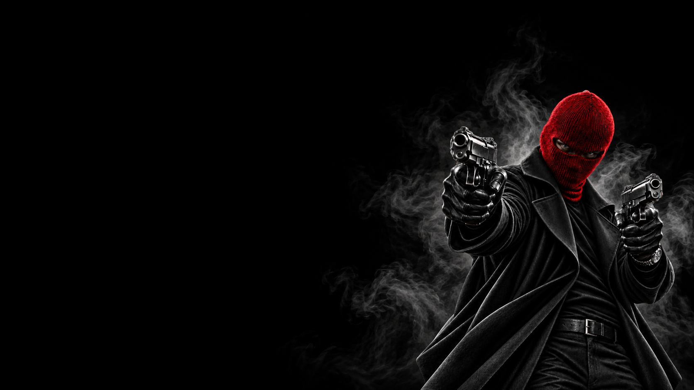

МИРНЫЕ · ПОСМЕРТНАЯ
СКОРОСТРЕЛ
ПОСЛЕДНИЙ ВЫСТРЕЛ.
ПОСЛЕДНИЙ ШАНС.
Мирные
Пассивная · Посмертная
Последний выстрел — покидая игру, Скорострел в своём последнем слове выбирает двух игроков, которых считает Мафией. Если выбранные игроки действительно относятся к Мафии — они покидают игру вместе со Скорострелом. Если они Мирные — остаются за столом.
Скорострел играет на стороне мирных, но его главная сила раскрывается в момент собственного ухода. Перед тем как покинуть игру, он получает последний шанс нанести удар по Мафии и называет двух подозреваемых. Судьба каждого из них зависит от настоящей роли.
Каждая из двух целей проверяется отдельно. Мафия покидает игру, Мирный остаётся. Поэтому Скорострел может устранить сразу двух представителей Мафии, только одного из них или не устранить никого.
Запоминай поведение игроков и их голосования с самого начала. Твоё последнее решение может оказаться важнее всех предыдущих голосов — постарайся уходить из игры уже с двумя именами в голове.